机器学习 by 李宏毅(7-2)
Conditional Generation
控制 Generator 的输出，加入 Condition x，似的Generator 根据 x 和 z 产生 y
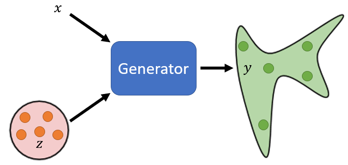
Application
Text-to-image：文字对图片的生成，实际是 supervised learning 的问题，训练集是图片和对应的文字描述。
Generator 的输入 x 就是文字描述，可以用 RNN、Encoder等 seq2seq 模型对文字向量化
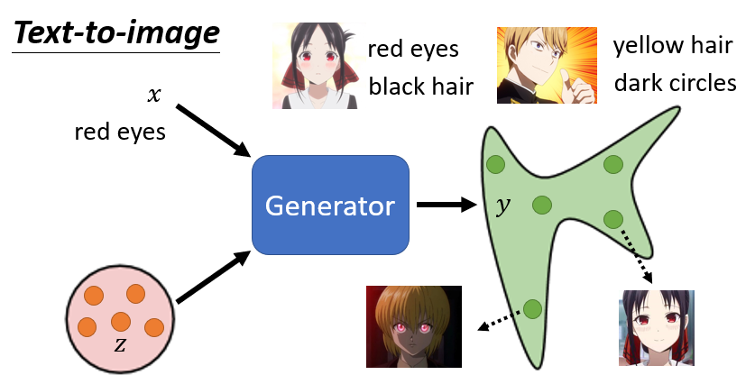
每次 Generate 出来什么样的角色, 取决于 Sample 的得到的 z，例如下图所示：
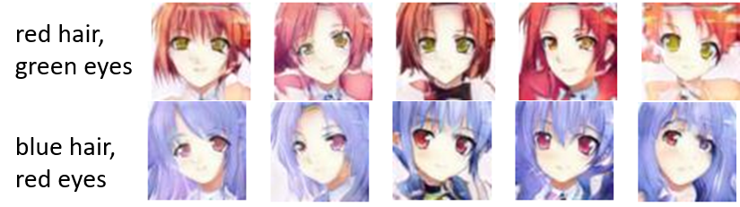
Framework
Generator 有两个输入,一个是从 Normal Distribution,Sample 出来的 z,另外一个是 x,也就是一段文字。Generator 会產生一张图片 y
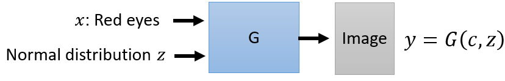
Discriminator 以y作为输入，输出一个 Scalar 表示 y的真实性。
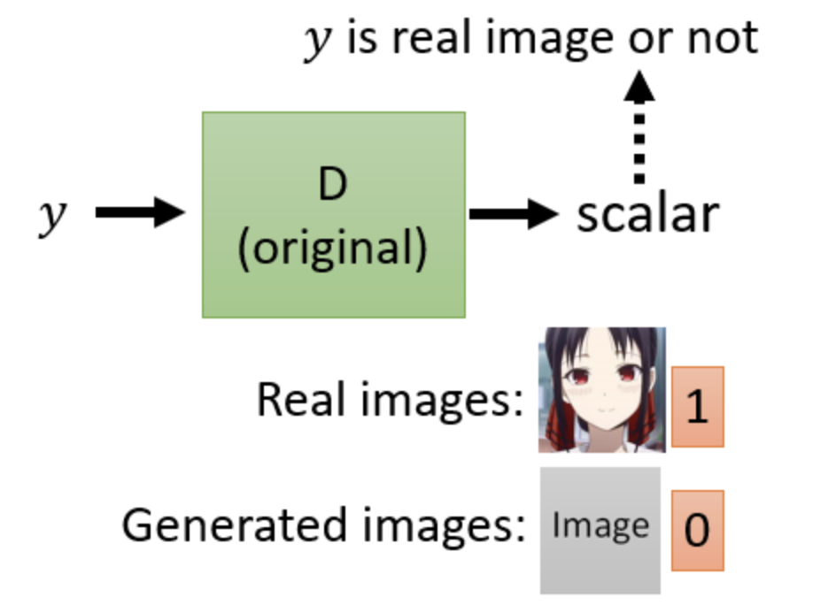
Train
训练这个 Discriminator , 如果看到真实的图片,就输出 1, 如果看到生成的图片,就输出 0, 可以训练 Discriminator, 然后 Discriminator 跟 Generator 反复训练。但是这样不能解决 Conditional GAN 的问题。
如果 Train Discriminator 时, 这个 Discriminator 只会把 y 当做输入, 那 Generator 只会产生可以骗过 Discriminator 的, 非常清晰的人脸图片，但是跟输入完全没有任何关系，直接忽视 x 的信息
所以在 Conditional GAN 中的Discriminator 的 Input 除了y 还需要 X 的信息，只有当 y 的质量够真实且符合 x 的描述时，才会 Output 一个足够高的分数。
所以训练时，需要文字跟图像成对的资料Pair of Data
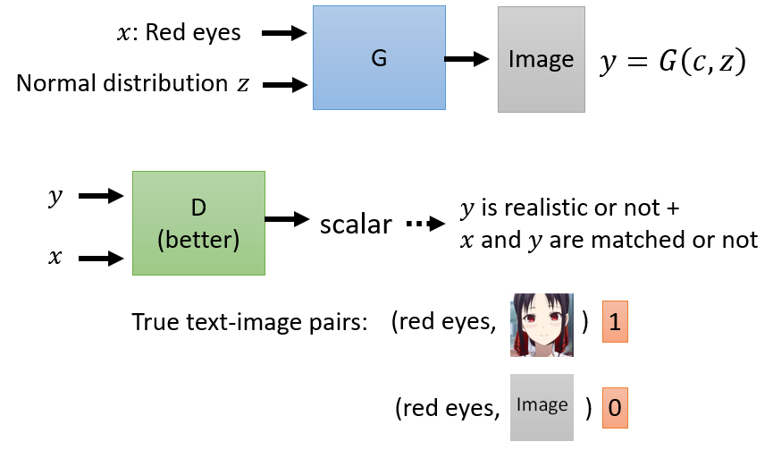
真正的成对的数据的label 为1，X 和 随机的生成的图像的 label 为0。 只有 Positive Sample 和 Negative Sample 来训练这样的 Discriminator 的效果还是比较差，还需要加上 真实的图片和错误的x的情况。
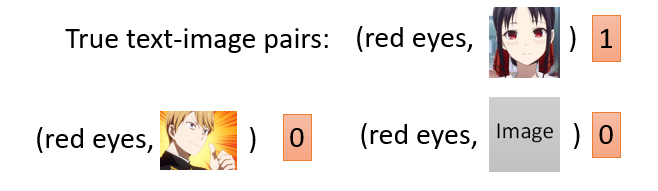
然后 Generator 跟 Discriminator,反覆的训练, 最后才会得到好的结果,这就是 Conditional GAN
Image Translation （Pix2pix）
Conditional GAN 的应用, 也可以输入一张图片, 产生新的图片
比如说
- 输入房屋的设计图, 然后让 Generator 直接输出房屋
- 输入黑白的图片,然后输出 彩色图片 （图像修复）
- 输入素描的图, 输出实景、实物
- 输入白天的图片,输出变成晚上的图片
- 输入起雾的图片, 输出没有雾的图片,把雾去掉
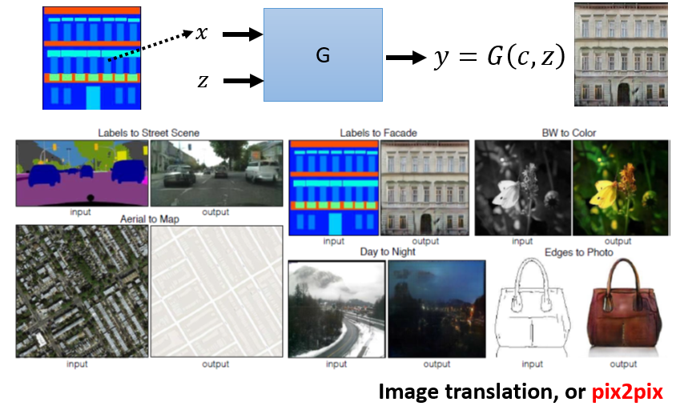
实现以上效果从文字生成图像没区别, 现在只是从图像生成图像, 把文字的部分用图像取代掉而已,那当然同样的做法。当然 Image Translation 可以用 Supervised Learning的方法
但是如果用 Supervised Learning 的方法, 得不到非常好的结果, 通常用 Supervised Learning 的方法, 训练一个图片生图片的 Generator, 输出的结果可能如图
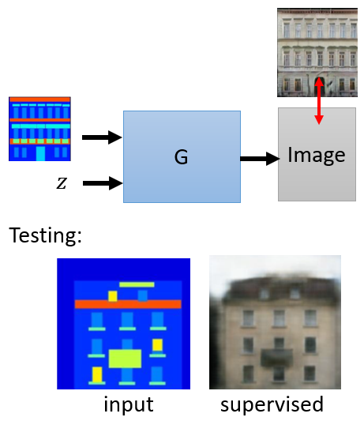
输出的图像非常地模糊,直觉上因為同样的输入,可能对应到不一样的输出。而使用GAN之后的输出十分的真实，
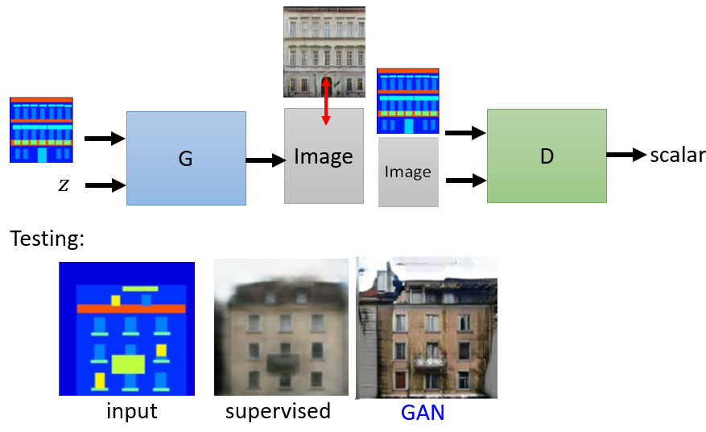
但是，GAN 的输出有时会产生输入不存在的东西，如图的左上角部分，解决这个问题可以使用 supervised + GAN 的方法。Generator 在训练的时候, 一方面它要去骗过 Discriminator, 但同时又要产生一张图片跟真实答案越像越好。
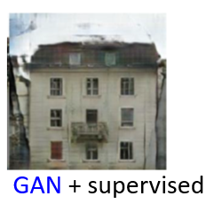
sound to image
比如听一段狗叫声,看能不能够画出一只狗，那声音跟影像成对的数据，可以通过爬到大量的影片, 把一帧的图片对应到一小段声音，收集起来就可以 Train 一个 Conditional GAN
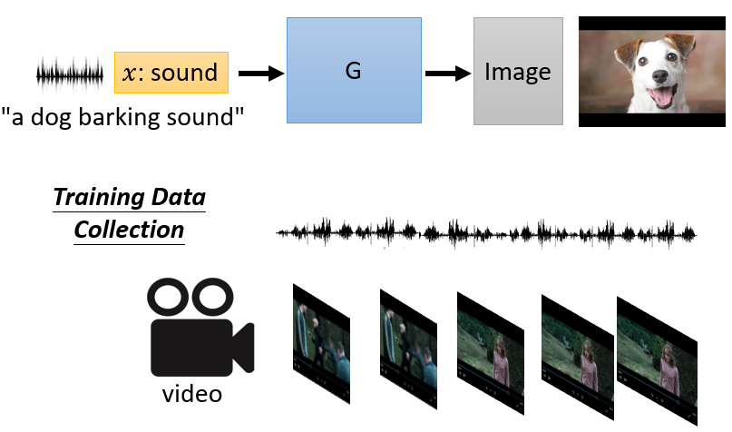
Image 产生 gif
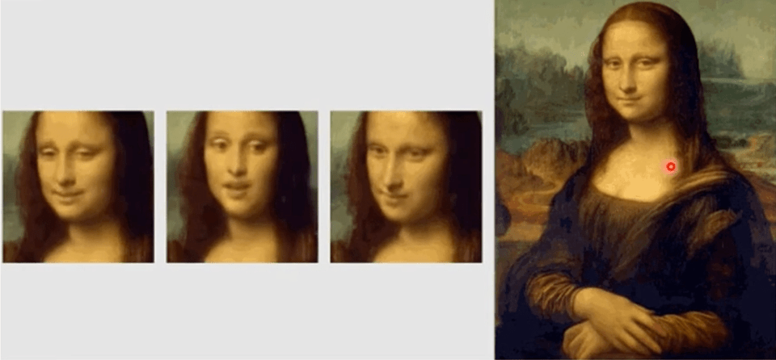
论文链接：https://arxiv.org/abs/1905.08233
GAN in Unsupervised Learning
训练GAN的时候使用的数据是不成对的，有一堆X我们有一堆Y,但X跟Y是不成对，叫做unlabeled的数据
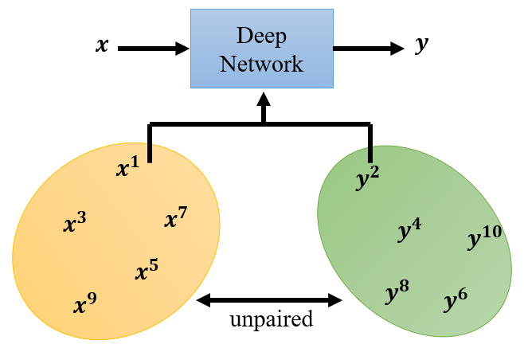
影像风格迁移
假设一个 Deep Network 的 TASK 是把X domain的图（假设是真人的照片）, 映射到 Y domain的图（二次元人物的头像），没有任何 pair data
unconditional的 generation 的 generator 架构如图，另输入我们不再是Gaussian的分布, 而是X domain的图片的分佈,输出是Y domain图片的分佈
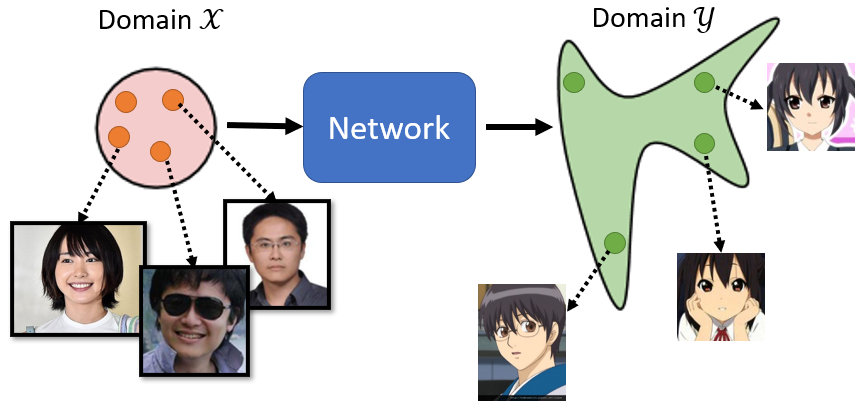
Discriminator，能够识别 Y domain 的图和非 Y domain 的图，Y domain的图就给它高分,看到不是Y domain的图。但 Generator 并不会考虑到 X domain 的信息，仅仅是输出Y domain 就可以另 Discriminator 得到高分
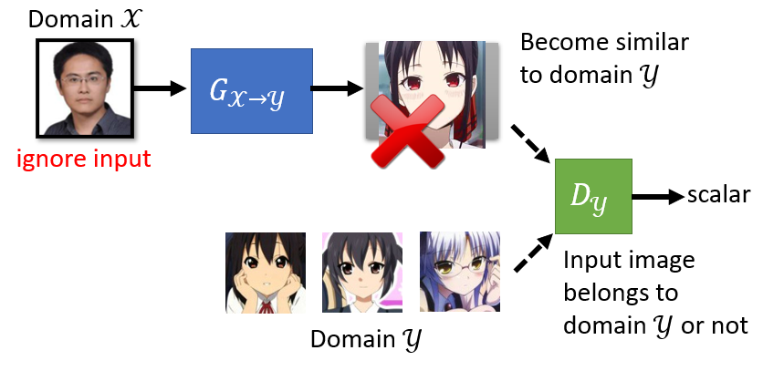
生成的图像与输入的真实的照片,没有什麼特别的关系。conditional GAN 也有一模一样的问题, conditional GAN 假设discriminator只看Y, 那可能会无视generator的输入, 產生出来的结果不符合要求。
如果我们要从unpaired的data学习 没有办法直接套用conditional GAN的想法,conditional GAN里面, 是有成对的数据
Cycle GAN
训练俩个 Generator ，一个 负责 X domain 转换到 Y domain，另一个负责 Y domain 转换到 X domain
在训练的时候增加了一个额外的目标, 希望输入一张图片, 从X domain转成Y domain以后, 要从Y domain转回原来一模一样的X domain的图, 经过两次转换以后,输入跟输出要越接近越好。
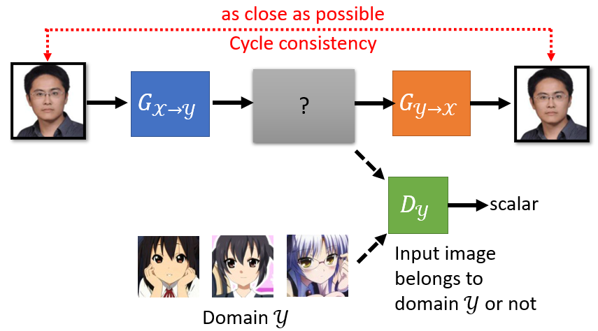
相当于有一个循环, 从X到Y 在从Y回到X, 所以叫做 Cycle GAN, 要让输入经过两次转换以后,变成输出。输入跟输出越接近越好,这个叫做 Cycle 的 consistency。
三个Network
- 第一个generator, 把X转成Y
- 第二个generator, 把Y还原回原来的X
- discriminator, 分辨蓝色的这个generator它的输出, 像不像是Y domain的图
加入了这个橙色的从Y到X的generator以后, 蓝色的generator 就不能够随便生成跟输入没有关系的人脸
Problem
但是Generator 可能会学习到一些奇怪的关联，只能保证两个 Generator 可以还原，但是中间的 Y domain 与原始图像的关系并不是我们希望的。这个问题有可能发生，但是并没有好的方法解决。
实际上你要使用Cycle GAN的时候,这种问题没有那么容易出现, 输入跟输出往往就会看起来非常像,而且甚至不用cycle GAN, 拿一般的GAN来做, 这种图片风格转换的任务,往往也做得起来。
双向 Cycle GAN
Cycle GAN可以是双向的，在训练cycle GAN的时候, 可以同时做另外一个方向的训练,也就是
- 橙色的generator, 负责Y domain 转换到 X domain
- 蓝色的generator, 负责把X domain的图片还原回原来Y domain的图片
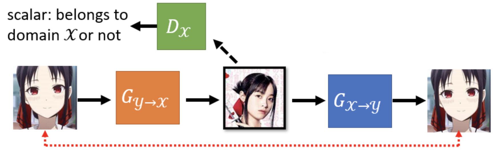
效果
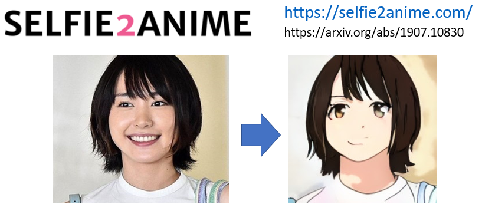
失败结果
其他风格迁移 GAN
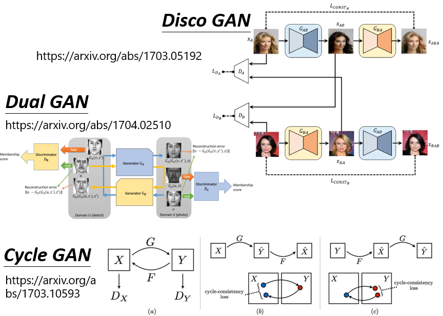
Disco GAN、Dual GAN,他们跟Cycle GAN没有半毛钱的不同
Disco GAN、Dual GAN、Cycle GAN, 是完全不同的团队,在几乎一样的时间,提出了几乎一模一样的想法。
另外一个更进阶的,可以做影像风格转换的版本,叫做StarGAN，Cycle GAN 只能在两种风格间做转换,那StarGAN 可以在多种风格间做转换。
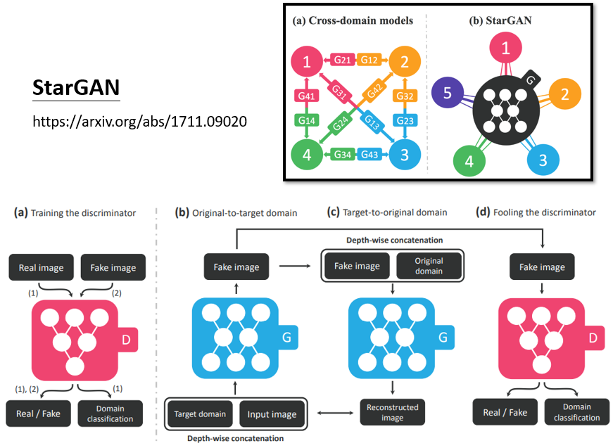
Text Style Transfer
例如，负面的语句转换为正面的句子，同样可以用 Cycle GAN 实现。
收集一大堆负面的句子,收集一大堆正面的句子
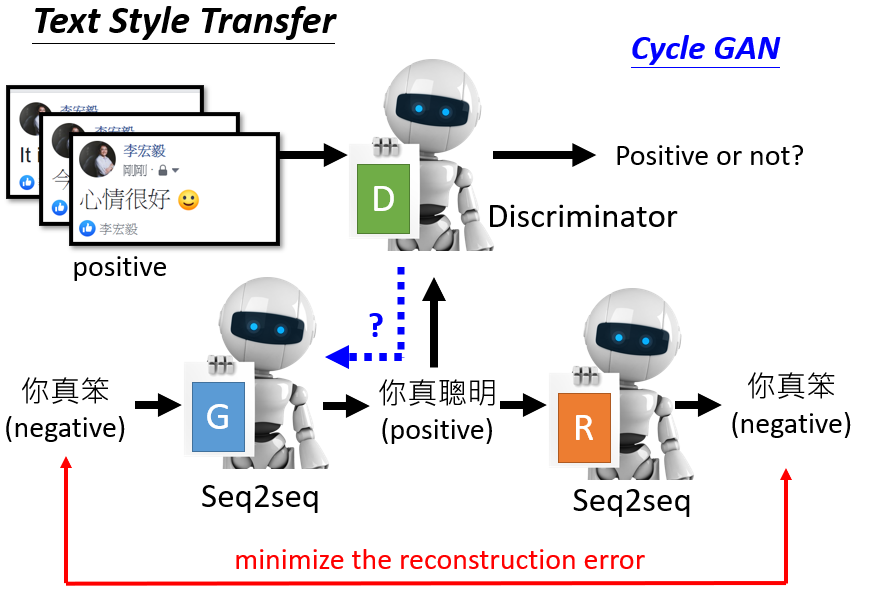
存在问题，这个sequence to sequence model 输出是文字, 接到discriminator无法 Gradient descend，只能作为 RL 问题去训练。
效果展示
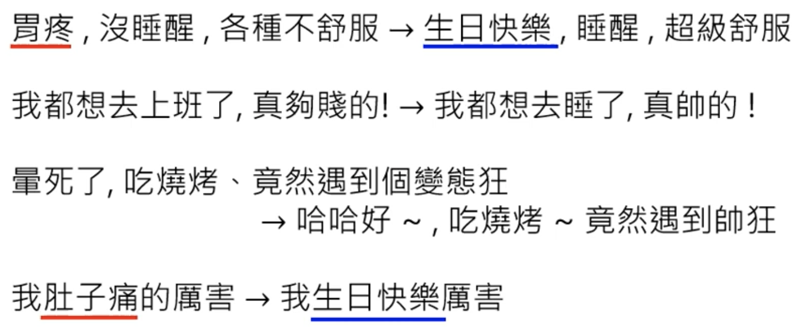
其他应用
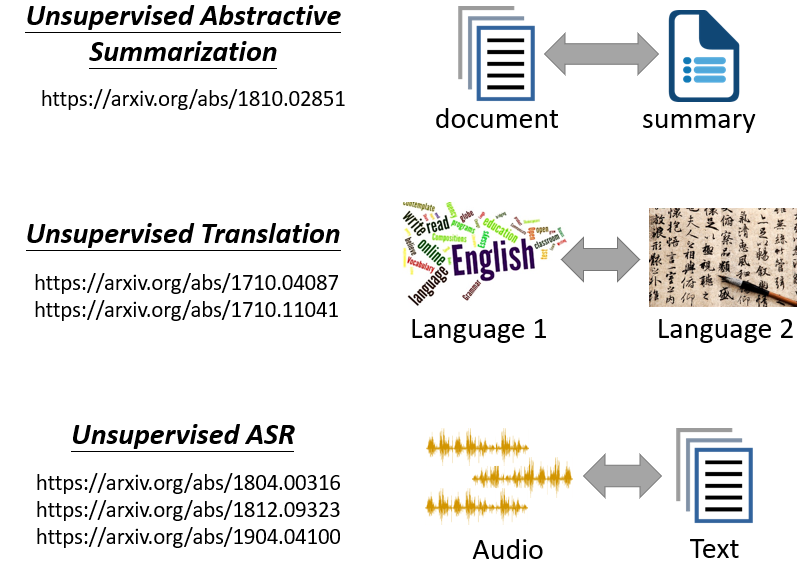